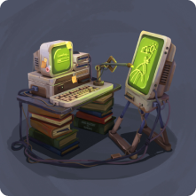
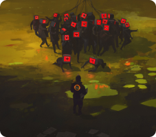
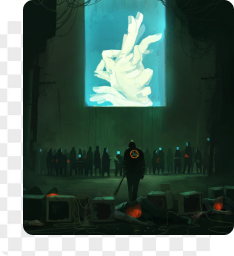

Derechos de
autor y propiedad
intelectual
El auge de las IAs en la creación artística: ¿Aliadas de los
artistas o una amenaza latente? Generemos el debate.
Un debate sobre las IAs en el arte
Generar



IA
Creación de obras a partir de comandos